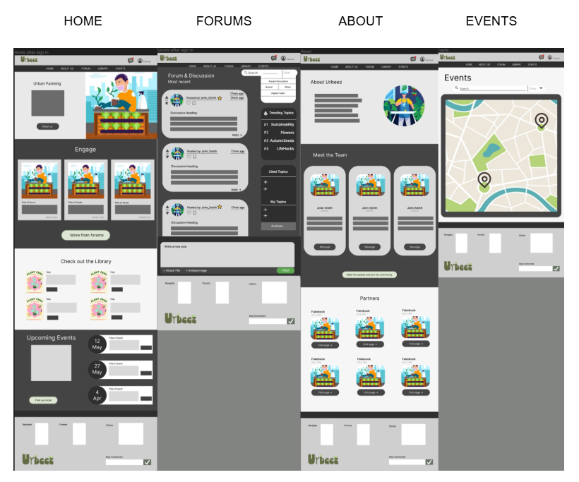
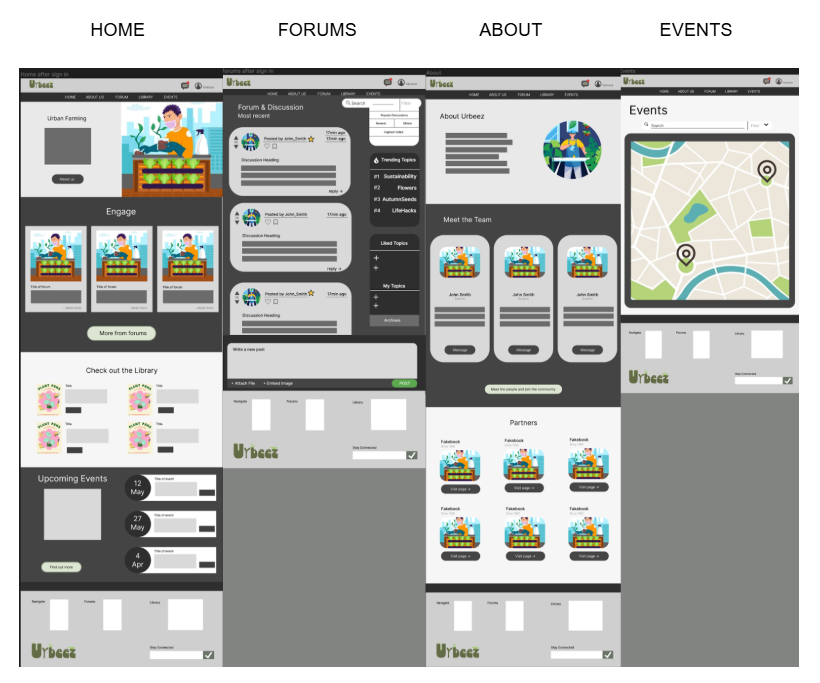

Major Group Project: Urbeez
Urbeez is an intuitive, user-centric web platform designed to foster community connections and promote sustainable urban farming practices. The platform provides urban farming enthusiasts with educational resources, tools for planning and maintaining gardens, and networking opportunities to enhance collaboration.
The Urbeez Concept Development Report is downloadable here.
Key features include:
- Educational Resources: Curated content, including articles, tutorials, and infographics, covering sustainable farming practices and techniques.
- Community Engagement: Discussion boards, Q&A sections, and project-sharing features to facilitate collaboration. A direct messaging feature encourages users to connect with others through a simple means of communication, while forums build the community effectively.
- Project Showcase & Events: Users can showcase their urban farming projects and participate in events and workshops.
- Badge Rewards System: This offers users a fun and engaging way to build up a reputation on the Urbeez platform. It works as a ranking system, with icons that showcase different plant stages, reflecting user's experience and engagement within Urbeez. Badges are viewed on the profile as well as in the public view to ensure trust in the spreading of information.
Design Process
The design process involved extensive research, including the creation of user personas and competitor analysis. User feedback played a central role in refining the platform’s UX and UI, particularly focusing on usability, information gathering and information reliability. Eventually, the identification of user goals and needs were later checked to ensure that the website platform achieved them.
 

Usability Testing
Through iterative testing with user personas and random participants, key insights were gathered on user satisfaction and functionality. The platform performed well in navigation and accessibility, with improvements identified in the information retrieval process to enhance time efficiency. Feedback highlighted strong user satisfaction with the platform’s clean layout, effective communication features like the messaging system and produce swapping, and a positive response to the design and colour scheme, with comments like “The whole thing is so cozy!” SUS scores of 74.2 and 73.6 indicate a user-friendly experience that meets the needs of various ages and accessibility requirements.


Conclusion
The high-fidelity prototype of Urbeez successfully addresses the core needs of its target audience, offering a functional, accessible, and engaging platform for urban farming enthusiasts. The next steps involve refining search functionalities and further optimising the user experience based on continuous feedback and testing.